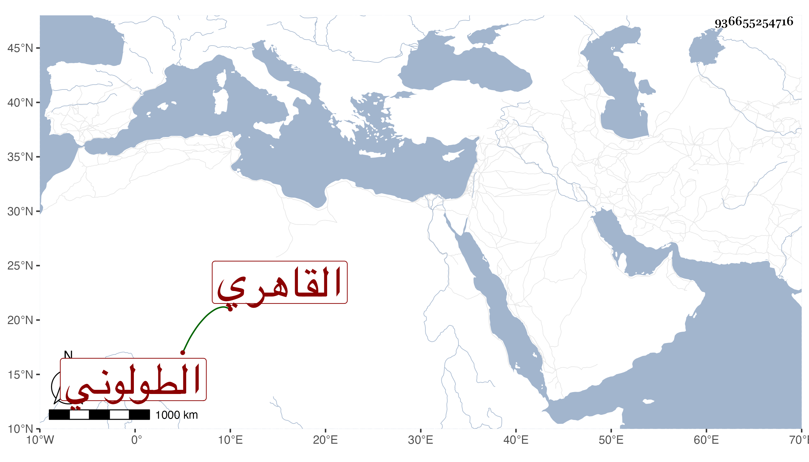

0902Sakhawi.DawLamic.ITO20230111-ara1.EIS1600.936655254716
Biography ID: 936655254716
168
محمد بن عبد الله بن أيوب الشمس القاهري ثم الطولوني المرقي أخو أبي بكر والد أحمد المذكورين ويعرف بالمستحل وبالرئيس . قرأ القرآن واعتنى بالميقات وأخذه عن جماعة منهم الشهاب السطحي وعبد الرحمن المهلبي وباشر الرياسة بجامع طولون وبالقلعة ولذا عرف بالرئيس وتنزل في الجهات وتكلم على أوقاف وكان يصحب الأمراء وغيرهم من القضاة كتمرباي وحج معه وقتا والجلال البلقيني وشيخنا وكان المرقي بين يديه في القلعة وله به مزيد اختصاص للطف عشرته وظرفه وفكاهته بحيث أنه لما تنزل في الحنفية بالشيخونية وقيل له كيف هذا وأنت شافعي فقال تمحي الحاشية التي كتبتها على المنهاج أو كما قال ، سيما مع وضاءته وكثرة تلاوته . مات في يوم السبت سابع ذي القعدة سنة اثنتين وستين ويقال إنه زاد على المائة أو قاربها رحمه الله وإيانا . وله ذكر في ترجمة أخيه من أنباء شيخنا قال وهو أخو شمس الدين رئيس الأذان بجامع ابن طولون الذي يقال له المستحل .
